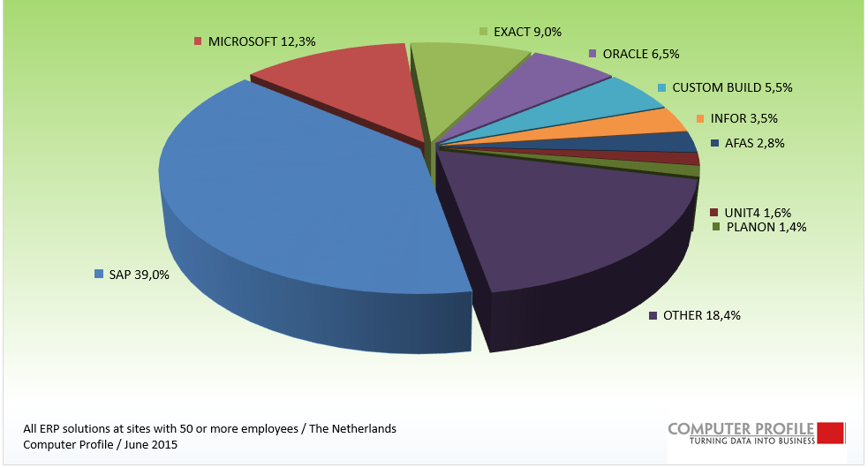

ERP發展
• 40年代
電腦系統還沒有出現，為瞭解決庫存控制問題，人們提出了訂貨點法。
• 60年代
電腦系統的發展，使得大量數據進行複雜運算，人們提出了MRP(Material Requirement Planning)理論。
• 70年代
人們認識的加深及電腦系統的進一步普及，MRP的理論範疇也得到了發展。
• 80年代
電腦網路技術發展，企業內部信息得到充分共用，MRP的各子系統也得到了統一，發展了MRP(Manufacturing Resource Planning) II理論。
• 90年代
市場競爭進一步加劇，企業思想隨之逐步發展成為怎樣有效利用和管理整體資源，美國加特納公司（Gartner Group Inc）首先提出了ERP的概念報告。
電腦系統還沒有出現，為瞭解決庫存控制問題，人們提出了訂貨點法。
• 60年代
電腦系統的發展，使得大量數據進行複雜運算，人們提出了MRP(Material Requirement Planning)理論。
• 70年代
人們認識的加深及電腦系統的進一步普及，MRP的理論範疇也得到了發展。
• 80年代
電腦網路技術發展，企業內部信息得到充分共用，MRP的各子系統也得到了統一，發展了MRP(Manufacturing Resource Planning) II理論。
• 90年代
市場競爭進一步加劇，企業思想隨之逐步發展成為怎樣有效利用和管理整體資源，美國加特納公司（Gartner Group Inc）首先提出了ERP的概念報告。
ERP現況
如今ERP已經廣泛流行起來，在全世界，ERP／MRP II的供應商主要有SAP、ORACLE等。

世界三大ERP廠商
SAP Microsoft Oracle
SAP Microsoft Oracle